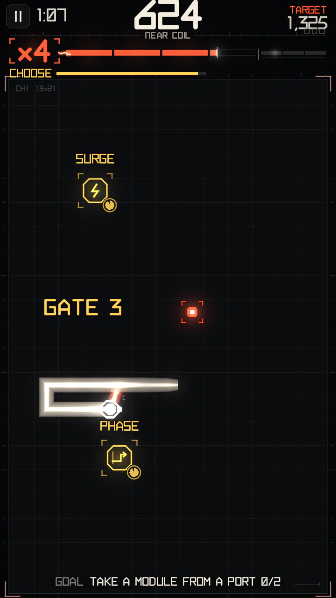
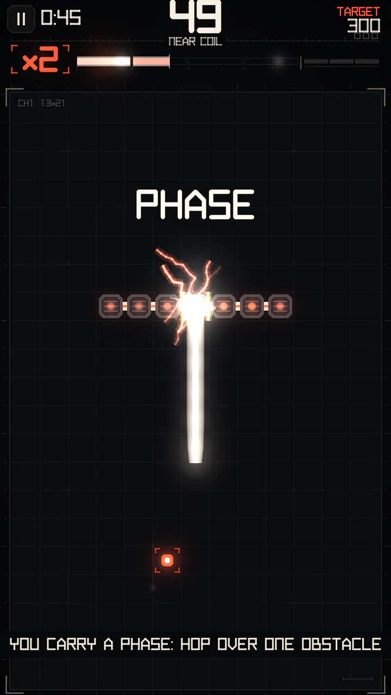
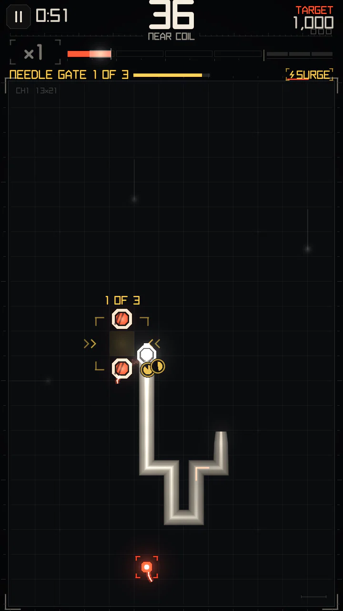
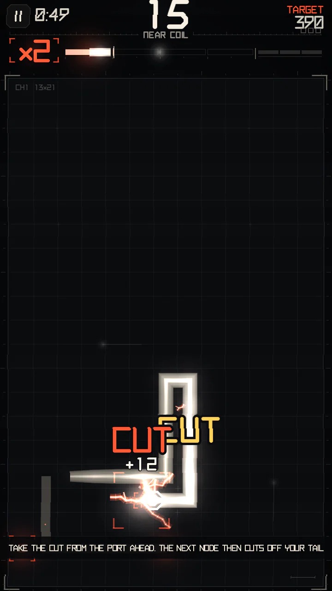

Modules
Win a Circuit Event and the board offers a reward: one or two ports, each holding a module. Drive into the one you want. Modules are never sold; you only get them by playing.
Ports (CHOOSE)


- Ports open after a won event (on Campaign levels that allow modules). One or two appear a short drive from your head, preferably on opposite sides of your heading, so it is a real fork.
- You have a few seconds to steer into one. Driving into a port takes its module; the other port disappears.
- What can be offered: PHASE unless you already carry one; SURGE always; CUT only when your body is long enough and you don't carry one.
- You carry at most one PHASE and one CUT at a time. The module you hold is shown on the right of the event bar.
PHASE


While you carry a PHASE, your next crash into a conductor does not end the run: the head hops over that one cell and lands on the far side.
- Works on any conductor: your body, pylons, live posts, bridge bars, wires and insulators. It hops exactly one cell, so the cell beyond must be free.
- Drive into the board edge instead and the PHASE takes you through it: you come back in on the opposite side, same row or column, for the same payout. The charge is spent on the edge, so if your body or a conductor sits where you come in, the run ends.
- A conductor with no free cell behind it still kills. One PHASE, one use: after it, walls kill again.
- The hop pays +50 points (× multiplier) and a solid charge boost — use it on purpose, not only as a spare life.
SURGE


About 8.1 s of overload:
| Effect | Value |
|---|---|
| Speed | +14% on top of the multiplier bonus |
| Charge from everything | ×1.40 |
| Points from everything | ×1.50 |
Taking another SURGE while one runs adds its time on top.
CUT


The next node you eat after taking CUT severs the oldest part of your body.
- It removes 35% of the body, the oldest part (the tail end), but never leaves fewer than 6 cells.
- Every severed cell discharges into the meter: the longer the snake, the bigger the boost.
- It frees room on a crowded board; the price is less body to skim along.